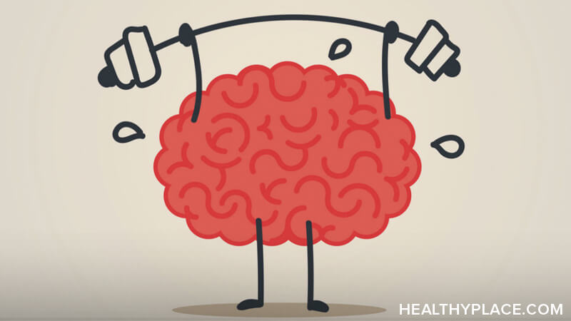

Technology: The Rise of AI
Artificial Intelligence (AI) is revolutionizing industries worldwide. From healthcare to finance, AI-powered systems are making processes more efficient and accurate. Companies are investing heavily in machine learning, allowing computers to perform human-like tasks with precision. However, concerns about job displacement and ethical AI usage remain a hot topic in debates.

Football is more than just a sport; it’s a cultural phenomenon. Millions of fans follow major leagues such as the English Premier League, La Liga, and Serie A. International tournaments like the FIFA World Cup bring nations together, creating unforgettable moments. Players train rigorously to achieve peak performance, inspiring young athletes worldwide.
Mental health is as important as physical health, yet it is often neglected. Stress, anxiety, and depression are common issues affecting people of all ages. Practicing mindfulness, maintaining a balanced diet, and regular exercise can help improve mental well-being. Seeking professional help when needed is crucial for a healthier life.
Cryptocurrency is transforming the financial world, offering an alternative to traditional banking. Bitcoin, Ethereum, and other digital currencies are gaining popularity as decentralized payment methods. Governments and financial institutions are debating the regulation of crypto markets, while investors explore the risks and opportunities in this emerging sector.
© 2025 Anup News | All Rights Reserved